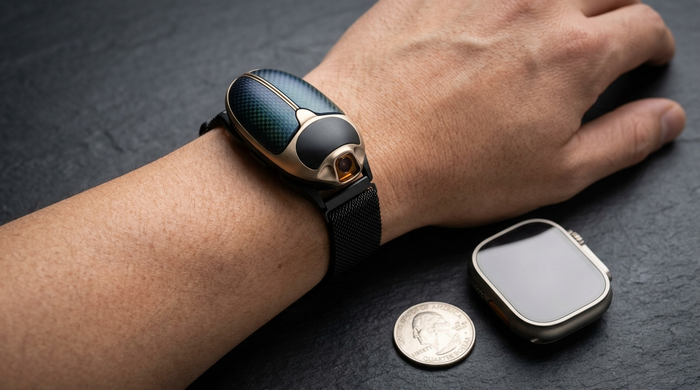
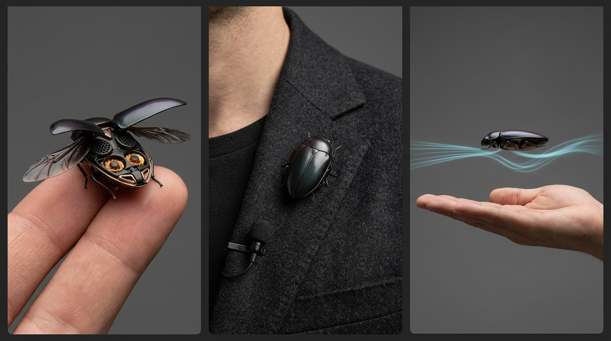

SCARAB Ω² (`Arch 4.2`): Zero-Servo Chiral Coandă & Split-Gyroid Monolith (`14.85 g` Tier-1 → `11.40 g` Tier-2 Target)
Use the interactive 3D simulator dock below to switch between the 7-Stage 3D Build Mockup, 1:1 Human Wrist & Cross-Lineup Scale (`38.5 mm → 95 mm`), 4-Layer Z-Axis Clamshell DFM Stack, Chiral Coandă Flow Explorer, and Arch 3 Baseline MVP—or open any simulator full-screen in its own browser tab.
🎮 Interactive 3D Simulator Dock (Click Any Tab Below to Switch Live)
Includes the new SCARAB Ω³ (`CHAMELEON-HALO`) `6.8 mm` 3D-Printed Interlocking Iris-Rotor & Dandelion-Jellyfish Simulator (`UNVERIFIED DESIGN TARGETS` — pending `$34.60` 3D-print & `$98.40` `20 kSPS` bench coupon validation).
⌚ How `SCARAB Ω²` Scales as a Wearable on an Average Human


| Wearable / Reference Object | Dimensions (L × W × H) | Total Mass | Footprint on a `58 mm` Human Wrist / Collar |
|---|---|---|---|
| US Quarter Coin | 24.3 × 24.3 × 1.75 mm | 5.67 g | Fits on a thumb pad (`SCARAB Ω² Tier-2` weighs just 2 Quarters). |
| DJI Mic 2 Clip-On Transmitter | 46.0 × 31.0 × 21.8 mm | 28.00 g | Standard lapel microphone — nearly 2× heavier than `SCARAB Ω²`. |
| Apple Watch Ultra 2 (Case Only) | 49.0 × 44.0 × 14.4 mm | 61.40 g | Covers 76% of wrist width; 4.1× to 5.4× heavier than `SCARAB Ω²`. |
| SCARAB Ω² Tier-1 (COTS-Hybrid Target) | 42.5 × 28.5 × 17.2 mm | 14.85 g (Target) | 35% narrower than Apple Watch Ultra (`28.5 mm` vs `44 mm`); zero exposed blades or arms. |
| SCARAB Ω² Tier-2 (Custom-Silicon Target) | 38.5 × 25.8 × 15.4 mm | 11.40 g (Target) | Barely wider than a US Quarter (`25.8 mm`); light enough to wear as a magnetic shirt-collar brooch. |
🛠️ How to Build & Test `SCARAB Ω²` Step by Step (From `$98.40` High-Bandwidth Bench Rig to `14.85 g` Flying Wearable)
Reconciled with Codex Engineering Review: uses a `20 kSPS` (`50 µs`) high-bandwidth analog bridge + DMA ADC rig (replacing the slow `80 Hz` `HX711`), mounts all 4 motor stators on an Inter-Rotor Copper X-Vane Hub ($z = 0$) so lower-rotor exit swirl is preserved for Coandă roll steering, and tests each mechanism in strict matched-lift (`7.50 gf`) isolation before combining.
PHASE 1 (Days 1–5): The `$98.40` High-Bandwidth (`20 kSPS`) Single-Duct & Matched-Lift Bench Rig
Zero Custom Silicon NeededWhy this comes first: Before laminating the `14.85 g` flying spine, we validate the 3 core physical hypotheses—(A) Mirrored Chiral Coandă Roll Vectoring, (B) `68°` Hyperbolic Bellmouth + Ringleb TVC Lip Suction, and (C) Hybrid Necked-Helmholtz (`1.24 kHz`) + Quarter-Wave (`2.26–3.57 kHz`) Acoustic Liner—on a rigid `20 kSPS` 3-axis load balance.
- Propulsion (`$28.90`): `2×` COTS `0702` `23,000 KV` brushless motors + `1S 5A` BLHeli_32 / Bluejay ESC.
- `20 kSPS` 3-Axis Force/Torque Balance (`$37.50`): `3×` rigid `100 g` aluminum strain-gauge load beams ($f_n > 1.8\text{ kHz}$) in a T-balance ($F_z$ lift, $F_y$ lateral roll force, $\tau_z$ yaw torque) + `3×`
INA125P/AD620analog instrumentation amplifiers (`12 kHz` bandwidth) wired into anSTM32G431`12-bit 4 MSPS` DMA ADC logging at `20 kSPS/channel` (`50 µs` resolution). - Optical Shaft Phase Tachometer (`$4.00`): `2×`
ITR8307IR reflective sensors (`100 kHz` timer capture) reading upper/lower rotor RPM $\omega_1, \omega_2$ and phase $\Delta\phi(t)$ to `±0.5°`. - Power, Acoustic & SLA Coupons (`$28.00`):
INA226+ `0.01 Ω` shunt (`10 kSPS`), calibratedDayton iMM-6Cmic at `1.0 m` (`48 kHz` 24-bit WAV), and 5 modular `25 µm` SLA resin duct coupons (`B0`–`B4`).
- Step 1.1 (Inter-Rotor Hub Mount): Strip the two `0702` stators from their aluminum bases and press-fit them back-to-back onto the central Inter-Rotor X-Vane Hub ($z = 0$) so the lower rotor's exit wake enters the Coandă scroll with 100% unobstructed swirl.
- Step 1.2 (Experiment A — Coandă Roll & Coupling Map): Hold lift constant at $F_z = 7.50\text{ gf}$ by sweeping $\Delta\omega_1^2 / \Delta\omega_2^2 = -\alpha_T$. Record $F_y(\Delta\omega)$, roll moment $\tau_x$, parasitic yaw $\tau_z$, electrical watts $P_{\text{elec}}$, and `10%→90%` step latency on the `20 kSPS` trace.
- Step 1.3 (Experiment B — Matched-Lift `7.50 gf` Ablation): Test each feature one-at-a-time against plain cylinder B0: B1 (TVC Bellmouth Lip only), B2 (Coandă Scroll only), B3 (Symmetric `3×5` vs. Counterbalanced `[0°,113°,238°]` Toroidal Rotor), B4 (Hybrid Necked-Helmholtz `0.35 mm` slit + `24–38 mm` Quarter-Wave Liner), and B5 (Combined Stack).
PHASE 2 (Week 2): The Weighed `V0` Twin-Duct Flight Core (`15.4–16.4 g` Target · Codex Experiment C)
Calibrated 4×4 Asymmetric Mixer + Real CameraPHASE 3 (Month 2): Complete `14.85 g` Tier-1 Wrist Wearable
- Structural Battery I-Beam Lamination: Vacuum-bond top `0.12 mm` AIO flex-rigid skin and bottom `0.12 mm` shared-DC-bus ESC skin (`+0.08 mm` M55J carbon caps) directly onto the un-sleeved `220 mAh` pouch cell (`25 µm` Hysol EA 9394 epoxy film). Verify bending stiffness $EI \ge 4.8\text{ N}\cdot\text{m}^2$ and $f_1 > 1,350\text{ Hz}$.
- Tape-Spring Bistable Origami Elytra: Co-cure `[0° M55J / 12.5 µm Kapton / 90° M55J]` shells (`85 µm → 28 µm` thickness-graded) over the curved-crease aluminum die + backup `50 µm` Nitinol SMA trigger wire.
- 38-Hour Perched Sentinel Gate: Verify magnetic/dry-adhesive wall perching, `1.40–2.80 mW` sentinel standby, and autonomous return flight to the wrist cuff.
PHASE 4 (Month 12): `11.40 g` Tier-2 4-Layer Z-Axis DFM Target
- 2-Piece Clamshell Micro-Molding (`≥2.5°` Draft Angle): Tool 8-cavity hardened steel molds for `30% CF-LCP` Upper and Lower Clamshells along the equatorial parting line (zero side-actions; subject to moldflow validation of `0.35 mm` slits).
- 4-Layer Vertical Pick-and-Place Stack: Stack Layer 1 (Lower Scroll Clamshell) → Layer 2 (Structural Battery I-Beam + Inter-Rotor X-Vane Hub) → Layer 3 (Upper Labyrinth Clamshell) → Layer 4 (R2R Stamped Origami Cap) with single-pass vapor-phase reflow.
- EoL Calibration Dome: Every unit undergoes automated laser vibrometer balance (`G0.4`), 6-axis load-cell matrix $\mathbf{B}_{\text{cal}}$ trim flashing, and `1.0 m` microphone verification.
🧬 Complete Mass, Power & Performance Delta Table (`UNVERIFIED DESIGN TARGETS`)
| Subsystem / Metric | Arch 3A (Vanes + Servos) | SCARAB Ω (Pass 1) | SCARAB Ω² Tier-1 (COTS-Hybrid) | SCARAB Ω² Tier-2 (Frontier) | Physical Mechanism & Codex-Reconciled Notes |
|---|---|---|---|---|---|
| 1. Carapace & Acoustic Liner | 2.60 g | 1.75 g | 1.18 g | 0.88 g | Split-Gyroid ($H=0$) Clamshell + Hybrid Necked-Helmholtz (`1.24 kHz`) & $\lambda/4$ (`2.26–3.57 kHz`) liner. |
| 2. Deployable Elytra + Hinge | 3.65 g | 1.05 g | 0.77 g | 0.56 g | Variable-thickness (`85→28 µm`) Tape-Spring Bistable Origami (`0` servo, `0` 4-bar linkage). |
| 3. Roll Control Mechanism | 1.90 g | 0.00 g | 0.00 g | 0.00 g | Mirrored Chiral Coandă Scrolls + calibrated asymmetric matrix $\mathbf{B}_{\text{cal}}$ + burst `180 Hz` dither. |
| 4. 4× Motors + Inter-Rotor X-Vanes | 5.30 g | 3.80 g | 3.48 g | 2.42 g | Frameless `0702`/`0502` cores on Inter-Rotor Copper X-Vane Hub ($z=0$, preserving exit swirl). |
| 5. 4× Rotors (Cand. R-A / R-B) | 0.85 g | 0.75 g | 0.68 g | 0.48 g | Tested as Candidate R-A (symmetric `3×5`) vs. Candidate R-B (G0.4 `[0°,113°,238°]` toroidal). |
| 6. Avionics + ESC + Battery Spine | 8.70 g | 6.30 g | 5.84 g | 4.12 g | Structural Battery Sandwich I-Beam (`1.42g` skins + `4.42g` cell T1 / `0.86g` + `3.26g` T2) + shared `47 µF` bus. |
| 7. AI Camera + ToF + Margin | 3.20 g | 2.75 g | 2.90 g | 2.94 g | Windowed foveated camera + ToF + `1.22–1.80 g` realistic adhesive/solder/parylene integration margin. |
| TOTAL FLYING MASS (AUW) | 23.60 g | 16.40 g | 14.85 g (Target) | 11.40 g (Target) | Arithmetic verified; physical assembly mass pending Phase 2 & 3 weighing. |
| Hover Power / Active Flight Target | 9.10 W (4.2m) | 5.14 W (8.2m) | 4.12–4.85 W (8.8–10.2m) | 2.78–3.35 W (12.0–14.2m) | Shows both optimistic converged target and conservative non-compounded dynamic hover bound. |